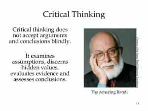

< < < Back
15 Tough Lessons I’ve Learned From Life – Return Of Kings
After my previous article in which I shared some hard-learned ideas I’ve gained over the years, time passed and I found myself encountering more and more along the way. As these principles would occur to me occasionally, I recorded them in my notes before they had a chance to slip away.
Below is a list of 15 more truths in particular that I’ve learned through many difficult moments in my life.
1. Be Proactive, Not Reactive
So many times I found myself being too complacent, or too “easy-going”…so much so that it wasn’t what I did that cost me; it was what I didn’t do that created more difficulties.
Often my thinking was that I could wait for some perfect opportunity, perfect timing, or perfect people to conveniently fall into place for me to do anything from getting better women, to a better job, to a better place to live, and so, so much more.
The truth is, there’s almost never a perfect time to do something, and almost never a perfect opportunity. Take my advice: take initiative, and make a move. You’ll find you’re often the only one who does.
2. Thing Are Almost Never Perfect On Their Own
I was a creative boy when growing up and mechanically inclined. I worked on many little projects over the years (cars, electronics, apartment repairs, customizing small things at home, etc) and discovered that the common factor was that in each case, improving my happiness and quality of life came from making an effort to make even small changes to things I bought, read, learned, etc. I found I could never count on the perfect idea or perfect solution to anything I wanted to accomplish without my own hand and my personal touches.
Rather than make excuses and give up success at something you’d like to do, take a fundamental starting point and tweak it, add to it, or modify it to get a great result that makes you happy.
You don’t have to have great skills or be an expert in whatever field you are dealing with: just be creative, try different things, and you’ll find your improvisation skills will improve over time as you have a set of ideas—and confidence—to fall back on the next time. Everyone learns through trial and error.
3. Be the the Icebreaker

Over the years I’ve noticed how more often than not people will remain content to be silent until there’s one person who makes the first step to opening a conversation. And the results are often excellent.
I grew up a very shy, quiet boy, and yet here now years later I’m outgoing and open dialogue with others. Why? It’s because I learned that until that first “Hello” and additional words are spoken, little happens with people. People need just a tiny indicator that you’re friendly and give them an opportunity to talk about themselves.
I am amazed at the social relationships I’ve built simply because I was willing to be the first to open dialogue and convey positive feelings to them.
4. 90% of Everything Is Just Trying (Never Fear the First Step)

As the old saying goes, “The journey of a thousand miles begins with the first step.” So true!
I have observed so many men settling for unattractive women, living with weak, slumped-over bodies, living an average, simp life or never attempting some great idea because they simply fear taking the first step. I recall specifically how years ago I attempted to encourage a friend to board a plane and go abroad. Naturally, the excuses came right away. I could read through the excuses: it said, between the lines, “I’m too afraid.”
A worthwhile endeavor isn’t like a switch: it isn’t a simple do or don’t…it’s a series of things or processes. And it’s inevitable that mistakes will be made. The most critical—and yet most amazingly simple—factor is simply trying.
5. People Are Subconsciously Talking to You
To my embarrassment I have to say that in retrospect I can see now years ago all the little clues girls sent about their interest in me; and yet I was blind to it.
People often like to think they are “sophiscated” and “complex.” Yet in reality, human beings cannot help but express their subconscious characteristics especially in regards to how they view others. Subtle body language, their tone and inflection when speaking, changes from normal behavior, and much more give little clues to if they’re someone you would want to be involved with or avoid as much as possible.
Pay attention…observe…and then go for it or avoid them as needed. Sometimes it takes a keen eye and good ear, but in time you’ll see more than meets the eye, and have the advantage of knowing what to do next.
6. Never Be Afraid to Question Things

One reason we grow up in the blue-pill mentality, and suffer all of its resulting terrible consequences, is our false set of beliefs. I’m sure almost all men with real red-pill wisdom can agree on this.
Over time I’ve come to see that what is supposed to be “fact”, or “correct”, sometimes is either mistaken, misrepresented as fact/true, or as a result of someone’s ego and unwillingness to admit error. Additionally, it’s even worse to know that social pressure often somewhat ostracizes men who are willing to call out or simply ask questions about these “truths.”
As I’ve gotten older I’ve embraced the value of thinking deeper, asking questions, and without apology:
- Examine the facts…does something feel “off” or questionable?
- Does it make sense logically? Or is there perhaps more to the story?
- What makes this person the end-all to say something is true? (Even so-called “experts”)
- What are the ideas based on? Where did this come from?
Sometimes this means being the odd one out in a crowd. Think, examine, and draw your own conclusions. Most of all, don’t just go along with the crowd like a lemming. Many times they’re wrong, and you’ll stay on the road to wisdom rather than being brainwashed.
7. Rid Yourself of Toxic And Negative People—Even If They’re Family
There are those people we grow up with, become friends with, or at some point interact with who seem to have a way of causing us grief and sucking away our positive energy and resources. Rather than being a one-time mistake, over time we see a pattern and their behavior shows us that they affect us in a way that causes conflict, stress, and often MUCH MORE in our lives. Often they have particularly destructive words and behavior that would be unacceptable in the eyes of perfect stranger, and yet they seem to be allowed to carry on with the same nonsensical garbage time and time again.
Ultimately I learned that whether a partner, close personal friend, or even family, toxic people must be cut out of your life. They’re a “net negative”: despite a few good points, the overall result is your life is worse off for being involved with them. And yes, I live by my own words regarding cutting toxic family members out of your life.
Toxic people are “defective” and possess personality traits like narcissism, hate, anger, insecurity, jealousy, and so forth which means you will always be a target for their bullshit, no matter how much you try to “white knight” and contribute to help them. You are fighting a lost cause and their number one concern is themselves, not you! They will drain your focus, effort, and peace of mind that would otherwise be spent on your own happiness both in the present & future.
8. Do Not Waste Your Time, Effort, And Concern On Those Not Worthy Of It
I have learned that many people who appear to need our help do not truly appreciate it, will learn nothing, and will continue making the same foolish/selfish/pathetic mistakes that they always have. You are simply enabling more of the same.
People who make poor life choices—who are not victims of mere circumstance—especially those with a lack of gratitude, or who do not attempt to better themselves, do not deserve your time. I do have personal beliefs that have me feel that I would be happy to help someone truly in need—however I no longer do so blindly.
9. Put Yourself In The Favor Of Others—You’ll Benefit
Over time I have lived in a few different cities, made new friends from former strangers, and without intending to do so, ran across something that benefited me many times: doing small favors for others, befriending them, and in return receiving better treatment or favors that others wouldn’t get.
Now wherever I go regularly or whoever I do business with I make sure to get to know more about them, learn some of their language (if from another culture), and do small favors for them to win their preferential treatment that the average person wouldn’t receive. I’ve been very glad I did.
10. Some People Cannot Be Reasoned With

A most difficult lesson to learn, and one I was taught when I was young due to violence in my public school. In the old days, I was a small, quiet guy who was picked on sometimes. Violence at school and even on the bus to and from our vocational school mid-day during high school, was somewhat severe at times.
I’ll never for the rest of my like forget watching one of my best friends getting a coat thrown over his head then beaten over the head by several guys—for no reason whatsover. That was their idea of fun.
What became clear to me extremely well was, after being attacked and beaten many times by guys I was around was this: some men simply hate you because you exist. No amount of talking and reasoning with them will achieve anything. They are dysfunctional pieces of garbage and understand only violence. If you are passive you will get hurt—be ready to do what you must, and do not hesitate to deal with it harshly.
11. The Hardest Opponent You’ll Ever Face Is Yourself

Despite all my experience, despite all the things I’ve learned and improved (or other people I’ve dealt with, both good and bad), it never fails that facing myself in terms of fighting my own defects and deficits is an incredible challenge.
It’s not just the actual effort that it takes to examine our own flaws then change them, but often defeating our own ego and the feelings that come with knowing we’re inadequate in certain ways. I’ve learned it’s a continual battle to change the things about you that you don’t like and never give up…it doesn’t happen overnight.
12. Never Count On Money Not In the Hand
Planning in advance for funds you should have soon inevitably leads to crushed hopes and disappointment.
The problem is that in the real world, things like this happen:
- The friend who is supposed to repay your loan turns out to be a broke loser
- Your income tax refund turns out to be a lot less than expected
- A buyer backs out of buying your item for sale
- Your car needs repair out of the blue, and it costs a lot
- Your work bonus turns out to be misleading and not worth the trouble
- The little brother gets arrested, loses his job, and now needs you to loan him money
…and the list goes on and on. It just doesn’t work. Don’t plan on money you don’t already have to spend. I have had all of the items above happen to me and I’ve finally learned my lesson.
13. Never Make A Major Life Decision Based On Opinions From the Average Person
The truth is, the average person—definitely not an ROK reader—is not well versed in recent events, has a poor understanding of reasoning, today’s values, today’s expectations for young men, and much more. With few life experiences, few struggles in life, and with no real understanding of critical thinking or listing the pros and cons of things in question, they’ll often give you ignorant, dishonest, or misleading answers for subjects they claim to know about or should know about.
I have discovered that whether out of fear for admitting ignorance or simply a lack of social skills (and the result of telling you what they think you want to hear), people often give terrible advice or completely worthless opinions.
Take it from me, you must (as much as possible) investigate as much as possible and only take advice from trustworthy people you know that have demonstrated an understanding and hopefully life experience that give them a far more intelligent, and honest, response to your need for guidance.
14. Location Matters
This is a fairly recent lesson I had to live through. With regards to people changing locations (typically for a new job) I have seen the following written, when a person asked for serious advice about moving out of state to unknown parts:
“It’s not where you are that matters. It’s who you are and how you make the most of it.”
This is a LIE!
Where you live and your environment matters a tremendous amount. A good city with opportunities and better quality of people can help your quality of life. A negative, depressing city or area will result in limited, if any, opportunities to enjoy life, pursue your goals, pursue women, and so much more.
Visit the area, spend time there, and make 100% sure you’re feeling it. Never allow yourself to be pressured into making a quick decision or taking advice from those without your best interest in mind.
15. Be Open Minded And Willing To Try New Things
Where I grew up there was no “culture” per se, aside from the typical small-town mentality. This meant a lack of exposure to many things in the world, and for some reason there still exists the illogical aversion to new ideas, foods, lifestyles, thought processes, and more.
I formerly refused to eat certain foods and certainly had never been involved with women outside of my race. I most certainly never could have imagined I’d speak another language. After traveling to South America for the first time, I found myself in situations where it would it would have been to awkward to refuse trying new things…and the rest is history. I quickly realized that most of my refusal had been irrational.
After this some of the most rewarding experiences came from the “I’ll give it a try” attitude.
In Conclusion
I’ve shared with you a number of principles that I have lived through, experienced, and came to see as being fundamental to a man’s wisdom…and when observed, can improve his quality of life greatly. Also I hope you can avoid some of the same mistakes I’ve made.
I truly believe that the hardest lessons in life are often the most valuable and prove themselves true time and time again, giving us the motivation and wisdom to grow as men.
Read More: 27 Masculine Quotes From Game Of Thrones